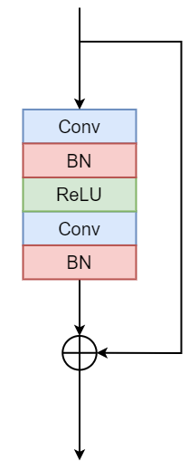
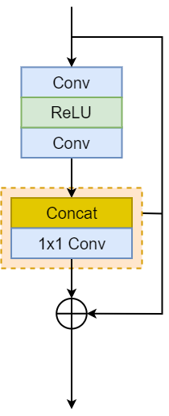
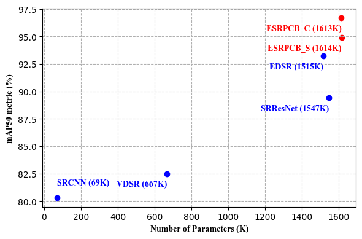
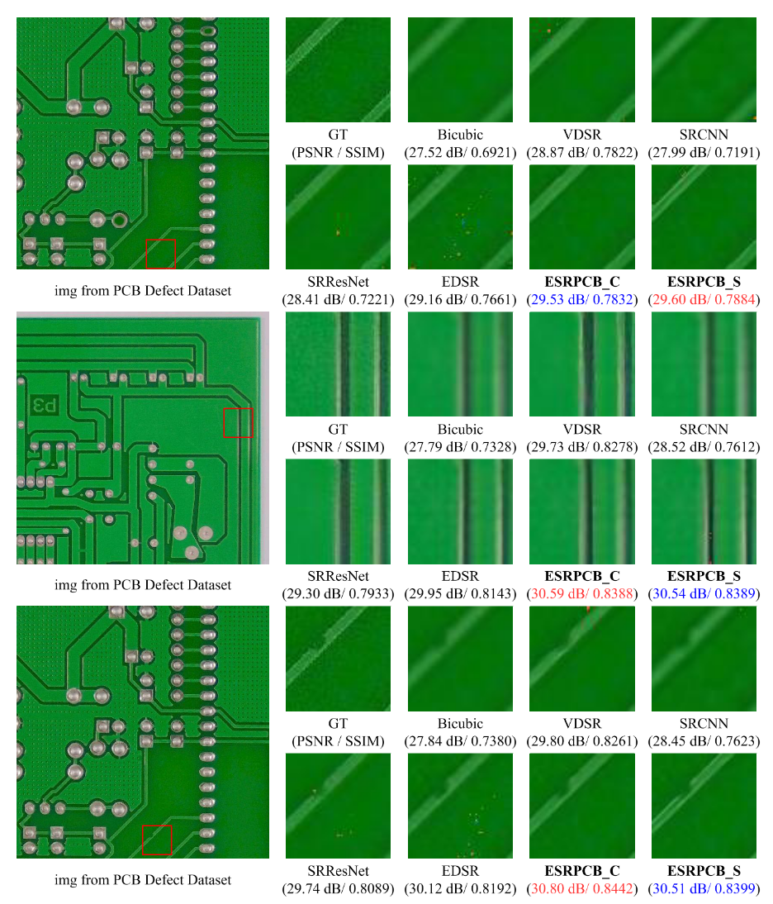
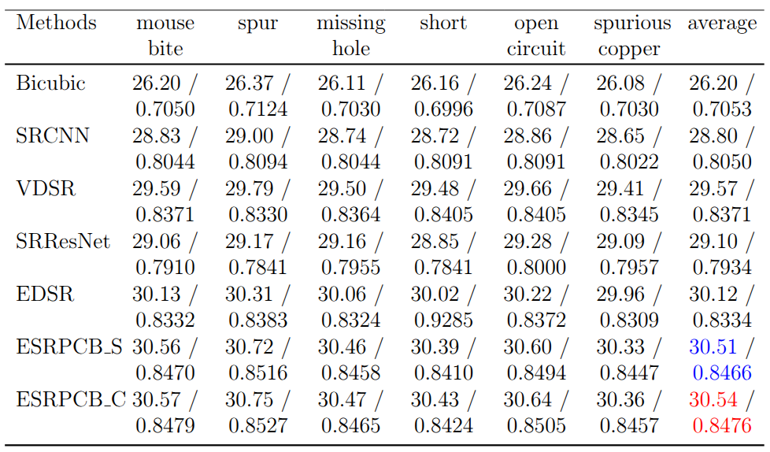
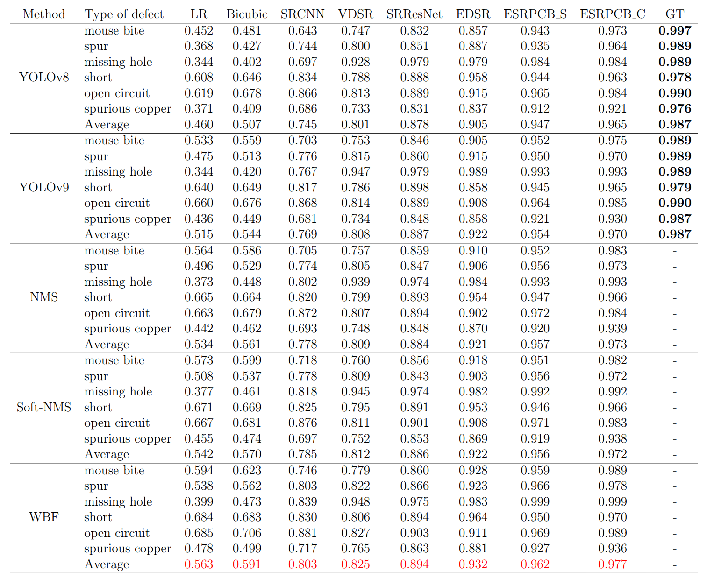

|
The architecture of the proposed ESRPCB Network.
|

|

|

|

|
|
The comparison of residual blocks in original ResNet (He et al. (2016)), SRResNet (Ledig et al. (2017)), EDSR
(Lim et al. (2017)) and our ResCat.
|
Experiments Results
|

|
Trade-off between accuracy metrics (mAP50) and model parameters on the PCB
Defect
dataset with various SR models and the multimodal detection model. Our method is highlighted in
red.
|
|

|
isual comparison of super-resolution results for various models on ×4 scale. The
ground truth and reconstructed images are compared across metrics (PSNR/SSIM). Red highlights the best
performance, and blue indicates the second-best.
|
|

|
Quantitative Comparison of Average PSNR and SSIM for Super-Resolution
Models.
|
|

|
Comparison of mAP50 scores for Super-Resolution Models, red highlights the best
performance, and bold values represent the ground truth (GT).
|
Code
Citation
1. HoangVan X., Canh T. N., Dinh B. D., Nguyen V-T. ESRPCB: an Edge guided Super - Resolution model and
Ensemble learning for tiny Printed Circuit Board Defect detection. Symposium on System Integration
(EAAI), 2025.
@article{hoangvan2025esrpcb,
author = {HoangVan, Xiem and Canh, Thanh Nguyen and Dang, Bui Dinh and Nguyen, Van-Truong},
title = {{ESRPCB: an Edge guided Super - Resolution model and Ensemble learning for tiny Printed Circuit Board Defect detection}},
booktitle = {Engineering Applications of Artificial Intelligence (EAAI)},
year = {2025},
address = {},
month = {},
DOI = {}
}
Acknowledgements
This research is funded by Vietnam National Foundation for Science and Technology Development (NAFOSTED)
under
grant number NCUD.022024.09.
This webpage template was borrowed from https://akanazawa.github.io/cmr/.
|
{kind=link}
{kind=link}
{kind=link}
{kind=link}
{kind=link}